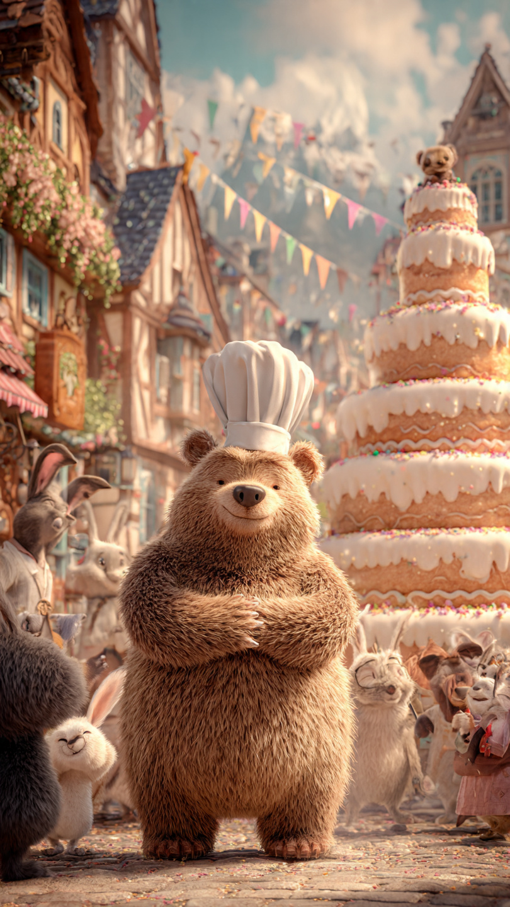
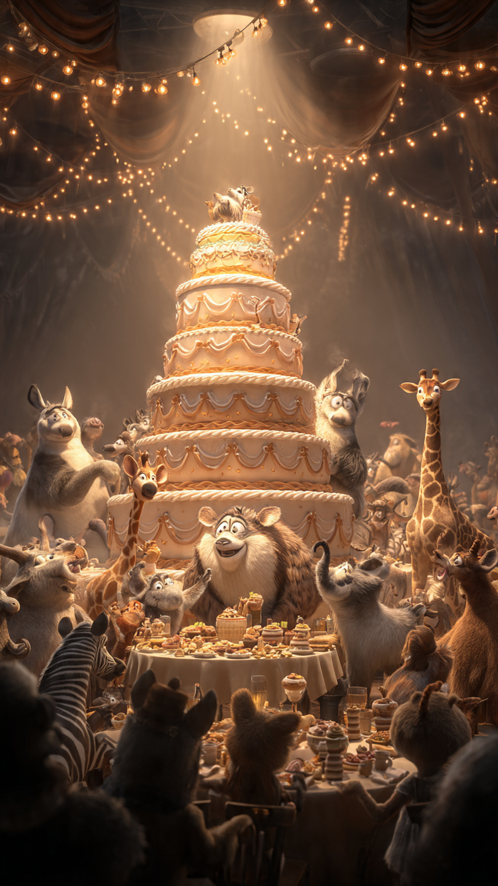

```html
🐻 الدب الذي صنع أكبر كعكة في العالم | قصص أطفال
```
في قرية صغيرة مليئة بالألوان والفرح، كان يعيش دب صغير اسمه دودي.
كان دودي يحب شيئًا واحدًا أكثر من أي شيء آخر...
صنع الكعك!
كان يقضي ساعات طويلة في المطبخ الصغير داخل منزله، يجرب وصفات جديدة ويزين الحلويات بأشكال جميلة.
كانت الحيوانات تأتي إليه دائمًا وتقول:
"كعكتك هي ألذ كعكة في الغابة!"
لكن دودي كان يحلم بحلم أكبر.
كان ينظر إلى الجبل البعيد ويقول:
"سأصنع يومًا أكبر كعكة في العالم!"
ضحكت بعض الحيوانات وقالت:
"كعكة أكبر من حجمك؟ كيف ستفعل ذلك؟"
لكن دودي لم يستسلم.
بدأ يخطط لحلمه.
جمع أفضل المكونات، وتعلم طرقًا جديدة للخبز، وطلب مساعدة أصدقائه.
جاء اليوم المنتظر.
أعلنت القرية عن مهرجان كبير، وقرر دودي أن يصنع الكعكة العملاقة أمام الجميع.
بدأ العمل منذ الصباح.
أحضر أكياس الدقيق، وصناديق الفواكه، وكمية كبيرة من الشوكولاتة.
عمل الجميع معًا.
السناجب جلبت المكسرات، والطيور زينت المكان بالزهور، والأرانب ساعدت في ترتيب المكونات.
وبعد ساعات طويلة...
بدأت الكعكة العملاقة تظهر.
كانت ضخمة لدرجة أن الجميع وقف ينظر إليها بدهشة.
لكن قبل أن ينتهي دودي من تزيينها...
حدث شيء لم يتوقعه أحد.
هبت رياح قوية، وبدأت أجزاء من الكعكة تتحرك!
صرخ الجميع:
"الكعكة ستسقط!"
نظر دودي إليها بخوف.
فهل سيتمكن من إنقاذ أكبر كعكة في العالم؟
📷 الصورة رقم 1

بدأت الكعكة العملاقة تميل بسبب الرياح القوية.
ركضت الحيوانات حولها في محاولة لإنقاذها.
قال الأرنب:
"يجب أن نفعل شيئًا بسرعة!"
لكن دودي لم يصرخ ولم يستسلم.
وقف يفكر بهدوء.
نظر حوله، ولاحظ أن المشكلة ليست في الكعكة نفسها...
بل في طريقة وضعها.
فقد كانت كبيرة جدًا، وتحتاج إلى دعم أقوى.
قال دودي:
"لن نحاول منعها من السقوط فقط..."
"بل سنجعلها أكثر قوة."
طلب من أصدقائه إحضار ألواح خشبية كبيرة، ووضعوا حول الكعكة إطارًا قويًا يحميها.
ثم بدأوا بتثبيت الطبقات واحدة تلو الأخرى.
كان العمل صعبًا، لكن الجميع تعاون.
بعد ساعات من العمل، أصبحت الكعكة أكثر ثباتًا من قبل.
نظر الجميع إليها بإعجاب.
قالت البومة:
"دودي، لم تنقذ الكعكة بقوتك..."
"بل بأفكارك وصبرك."
ابتسم الدب الصغير.
لكن المفاجأة لم تنتهِ بعد.
فقد كان هناك تحدٍ آخر.
عندما حان وقت عرض الكعكة أمام سكان القرية، اكتشف دودي أن هناك مشكلة كبيرة...
لقد نسي شيئًا مهمًا جدًا.
نظر إلى الكعكة العملاقة وقال بحزن:
"كيف نسيت هذا؟"
اقتربت منه الحيوانات وسألته:
"ماذا حدث؟"
قال دودي:
"لقد صنعت أكبر كعكة..."
"لكنني نسيت أن أجعلها تكفي للجميع."
ساد الصمت للحظة.
ثم بدأ الجميع يفكرون في حل.
وكان الحل سيجعل هذه الكعكة تصبح أشهر كعكة في العالم.
📷 الصورة رقم 2

نظر دودي إلى أصدقائه وقال:
"لقد كنت أفكر فقط في صنع أكبر كعكة..."
"لكنني نسيت أهم شيء، وهو أن أشاركها مع الجميع."
ابتسم الأرنب وقال:
"لا تقلق، يمكننا تحويلها إلى احتفال كبير!"
وبدأت الحيوانات تعمل معًا من جديد.
قسموا الكعكة إلى أجزاء كثيرة، وزينوها بألوان جميلة، وأعدوا طاولات طويلة لكل سكان القرية.
عندما بدأ المهرجان، تجمع الجميع حول الكعكة العملاقة.
كان الأطفال يضحكون، والحيوانات تغني، والكل يشعر بالسعادة.
لم تكن الكعكة مميزة فقط لأنها كانت الأكبر...
بل لأنها جمعت الجميع معًا.
اقتربت البومة الحكيمة من دودي وقالت:
"لقد حققت حلمك يا دودي."
ابتسم وسألها:
"لكنني لم أصنعها وحدي."
أجابته:
"وهذا هو سر نجاحك."
"الأشياء العظيمة لا يصنعها شخص واحد، بل تصنعها القلوب التي تتعاون."
في نهاية اليوم، حصل دودي على جائزة:
"أجمل كعكة في العالم"
وليس بسبب حجمها فقط...
بل بسبب السعادة التي نشرتها بين الجميع.
ومنذ ذلك اليوم، ظل دودي يصنع الكعك، لكنه لم يعد يحلم بأن يصنع الأكبر فقط.
بل كان يحلم بأن يصنع كعكات تجعل الآخرين يبتسمون.
🐻🍰 انتهت القصة 🍰🐻
العبرة:
النجاح الحقيقي لا يكون في تحقيق الحلم فقط، بل في مشاركة السعادة مع الآخرين.